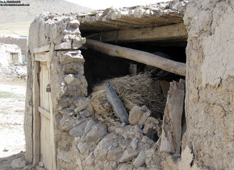
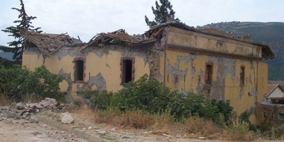
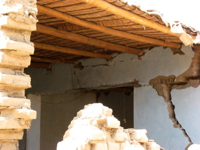

Wooden beams or trusses with heavy roof covering [RWO2]
Wooden beams or trusses and joists, supporting heavy roof covering. Examples include a sloped wooden roof with a layer of earth covered by clay roof tiles, found in high precipitation regions around the world. Another example of heavy covering is stone tiles, which are used for roofing.
This also includes flat roofs with heavy roof covering made from mixture of clay, straw and tamped earth. New layers are added annually to the roof as a protection against rain and snow percolation. These roofs are predominantly found in single-storey buildings in rural areas of Eastern Turkey, Iran, Afghanistan, Pakistan, India, China, as well as in the Andean highlands and other regions.


Flat wooden roof with heavy mud and straw overlay, Iran (A. Mahdizadeh, M. Yekrangnia)

Unreinforced masonry building in Baghlia City experienced roof collapse in the 2003 Boumerdes, Algeria earthquake; the timber roof structure supported clay tile roof covering (M. Farsi)

Typical flat roof found in adobe buildings in Peru made of wooden (or bamboo) beams overlaid with straw, mud, and in some cases tiles or metal sheets (N. Tarque)

Wooden roof structure with stone slate tiles, Nepal (M. Schildkamp)

Wooden roof supporting clay tiles, Chile (S. Brzev)

Flat wooden roof structure supporting heavy mud covering, India (S. Brzev)

Wooden roof with a heavy mud overlay caused many fatalities in the 1993 Maharashtra, India earthquake (S. Brzev)